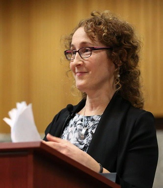

Anti-Whiteness in Healthcare
October 31st, 2020
From our resident Globo Homo Schlomo shills, The Tyee: TDC_ARTICLE_START
Only an amendment to the Canada Health Act can bring systemic change to racist health-care practices, says group.
It’s time to add anti-racism as a fundamental principle of the Canada Health Act and launch anti-racist efforts at every level of the system, according to a group of health-care providers, academics and lawyers calling on Ottawa for action.
The act now sets out five principles governing the delivery of health care, saying it must be publicly run, accessible, cover all medically-necessary care, not require payments and provide care outside a person’s home province.
Those are not enough to ensure proper care for patients who are Indigenous, Black or people of colour, the group maintains.
“We call on the federal government to adopt anti-racism as a sixth pillar of the Canada Health Act,” their open letter says.
The act, the group says, is widely considered emblematic of values that are core to the country’s character.
“It has been identity-defining for Canada for many, many years,” said Josée Lavoie, a professor and expert in Indigenous health policy at the University of Manitoba and one of the creators of the open letter.
TDC_ARTICLE_STOP
It’s difficult to see where the lie is here. It’s certainly core to the values of the privileged. It is of course unclear what exactly “anti-racism,” means in healthcare, but what these anti-whites want is probably something like worse outcomes for white people. I've read through their propaganda on this before, and it basically boils down to "sometimes brown people die in hospitals as well." It's not intellectually serious, only politically serious.
TDC_ARTICLE_START
“Entrenching this as a principle would trigger the development of policies and programs and a national conversation about the way in which systemic and interpersonal racism plays out in health care,” said Annette Browne, a professor at the University of British Columbia school of nursing who studies Indigenous health equity.
TDC_ARTICLE_STOP
Annette Brown, UBC Professor of Nursing.
Ah, Anette Brown. She got on my radar for a few different anti-white things she’s done, this merely being the latest. That face raises my suspicions, but I can’t say for sure, goy. What I can say for sure are the titles of some of her publications. “Problematizing Social Justice Discources in Nursing,” or how about “Promoting Social Justice and Equity by Practicing Nursing to Address Structural Inequities and Structural Violence.”
That face, I've seen that before. Maybe Tel Aviv?
She is exactly what you think she is. In fact, she’s a member of the “University of British Columbia Social Justice Institute.” It’s also exactly what you think, and while I will have a whole series of articles on this shit, let me give you one quote. “Dr. Minelle Mahtani continues in her role as Senior Advisor to the Provost on Racialized Faculty for two more years.”
Actually, I was worried that you goys might not believe me, so here you go.
TDC_ARTICLE_START
The B.C. government currently has an independent investigation of reports of widespread anti-Indigenous racism in the province’s health-care system.
By Thursday morning, almost 900 people had signed the open letter launched by Browne, Lavoie and two other members of the Brian Sinclair Working Group, formed to study and expose the effects of systemic racism in health care after the 2008 death of Sinclair, an Indigenous man who had waited 34 hours for care in a Winnipeg emergency room.
The act governs Canada’s 15 health-care systems — one for each of the 13 provinces and territories and two federally run systems for veterans and for First Nations, Métis and Inuit. But there was no meaningful input from Indigenous communities or experts before being passed in 1984.
TDC_ARTICLE_STOP
I also have to write up something about that “independent investigation,” because that shit’s so bad that it’s funny. I’m amazed at how both anti-white but also low energy these people are. The Brian Sinclair Working Group website has a grand total of one post. One. And it’s from 2017. That’s it. One.
We get our shit together and we can bend over and fuck these people so easily.
And nobody gave a fuck about the lack of aboriginal input, or “expert,” input, because that’s not relevant for us creating our healthcare system. Not then, not now, not ever.
TDC_ARTICLE_START
But long before the legislation’s inception, racism has been a defining characteristic of Canada’s health-care system.
“Racism [has organized] health-care practices, and really how our health-care system is structured, for more than two centuries,” said Browne, noting the forced sterilization of Indigenous women across Canada and the legacy of medical neglect and abuse in the residential school system.
“Stereotypes about Indigenous peoples that characterize them as using alcohol more continue to fuel resentment in the health-care sector as Indigenous people [are seen] as more undeserving of care.”
TDC_ARTICLE_STOP
Lots to unpack here. Well first of all the whole “forced sterilization,” bit sounds like legally actionable anti-white slander. My hours of research has upturned propaganda piece after propaganda piece, then finally a link “documenting the forced sterilization of 16 Indigenous woman.”
https://www.saskatoonhealthregion.ca/Pages/PageNotFoundError.aspx?requestUrl=http://www.saskatoonhealthregion.ca/DocumentsInternal/Tubal_Ligation_
You’ll notice if you click that link you get a “Page not found,” error. There appears to be no real concrete evidence that any “forced sterilizations,” occurred of aboriginal women, nor does it make any sense at all that there would be these programs of “forced sterilizations,” but not of abo men. My research into this has brought nothing but these super vague, super unquantified stuff about how some aboriginal women were coerced into being sterilized and that they were too stupid or uninformed to give enthusiastic consent.
It all seems incredibly bullshitty, and while I can’t conclusively say anything as of yet, this stinks.
It also shows that these people give absolutely zero fucks about the abos, since if they did, they would care about the rampant alcoholism amongst these people. If I were an Abo Nationalist, probably my number one issue would be “hey guys let’s stop sniffing glue and drinking so much alcohol.” In reality, this is just an anti-white issue, and these people are props. I can’t yet find the jew behind this, although there always is one, but the women are as you would expect, old, ugly, and bitter.
I’m not going to quote the entirety of this stupid propaganda, just the relevant parts from here on out.
TDC_ARTICLE_START
Emily Hill, a senior staff lawyer with Aboriginal Legal Services in Toronto and a co-signer of the open letter, thinks of Sinclair and Joyce Echaquan, two Indigenous people who died in hospital 12 years and more than 2,000 kilometres apart after facing racism.
TDC_ARTICLE_STOP
Translation: there are almost no deaths by abos in hospitals. As a result, they are spaced out by 12 years, and in totally different provinces.
TDC_ARTICLE_START
Even in the reviews of Sinclair’s death, one judge denied any discussion of systemic racism as a contributing factor, a practice that is all too common and makes harder to identify needed change on a large scale.
“We can’t use individual remedies and ask people who have suffered racism, and likely had their own health conditions worsened, to try to use an individual tool to correct that racism,” said Hill, noting how expensive and time-consuming it is to get a lawyer’s help in these cases.
TDC_ARTICLE_STOP
This is another case where people are absurdly pessimistic on the legal system. Judges will happily throw out anti-white bullshit if it is completely and utterly spurious.
TDC_ARTICLE_START
“It’s a really uphill battle, because of the system’s inability to even address systemic racism as a factor that could even be engaged.”
Barring a Supreme Court of Canada decision in an individual case, changing the act is the clearest way to embed addressing the reality of systemic racism into the thoughts and practices of health leaders.
And that’s where change is most needed, the group says.
“The real work starts after the act is changed,” said Lavoie.
TDC_ARTICLE_STOP
What’s so interesting is how their own comments section, while not being our goys, is just ripping them to shreds. Here’s the top upvoted comment, by “Chutny.”
TDC_ARTICLE_START
I worked as a nurse in the hospitals for 35 yrs..never did I ever see racism.I did experience many pts. that were abusive to the staff and the health care system.I was from the old school and we were trained to not judge,but give the best care we could provide.Perhaps attempt to look at both sides.
TDC_ARTICLE_STOP
Basically other comments are typical civnat stuff. Again, not our goys, but it shows how unpopular this stuff is with the general public. And that should be your takeaway. I can figure out more about this “forced sterilization,” issue, and then see what legal action we can take.